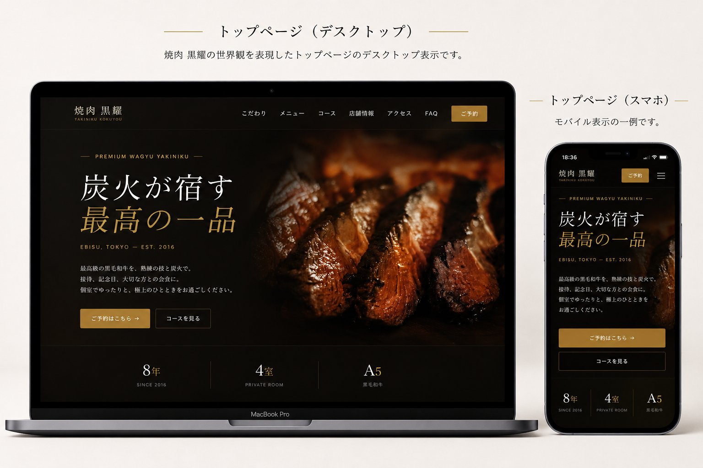

恵比寿の高級焼肉店ブランドサイト
新規制作プロジェクト
— A proposal for refined
digital hospitality —
Index
01 · Project Overview
恵比寿の高級焼肉店「焼肉 黒耀」のブランドサイトをゼロから企画・設計・実装。
「実店舗の格を、画面の中でも保つ」ことを最優先に、富裕層・接待層に選ばれる体験を構築する。
| 案件名 | 焼肉 黒耀 / 公式ブランドサイト 新規制作 |
|---|---|
| 業種・業態 | 飲食 / 高級焼肉（接待・記念日・デート利用が中心） |
| 想定クライアント | 個人オーナー経営の独立系高級焼肉店（恵比寿エリア） |
| 制作範囲 | 企画 / 情報設計 / デザイン / フロントエンド実装 / 予約システムUI設計 |
| 成果物 | HTML / CSS / JavaScript（静的サイト・予約ページ含む全2画面構成） |
想定客単価・コース料金帯
接待・記念日・デート利用
想定モバイルアクセス比率
02 · Purpose & KPI
03 · Target Persona
利用シーンの異なる2つのペルソナを設定。両者ともに「失敗できない夜」を共通の文脈として持つ。
「来店経験のない店をクライアントに紹介するのは怖い。サイトを見て
『ここなら間違いない』と確信できる情報が欲しい。」
「大切な日を任せる店なので、雰囲気と細やかな対応が見えること。
サイトで予約まで完結できると安心して決められる。」
03 · Deep Dive — User Journey
ペルソナの「気づき → 来店」までを5フェーズで分解。各フェーズでユーザーが何を感じ、何を必要とするかを起点にコンテンツとUIを設計する。
ディレクター視点： ペルソナの「失敗できない夜」という共通文脈は、「比較フェーズで感じる不安をどれだけ早く解消するか」がCVRに直結する。 本サイトは「世界観の圧倒」→「価格の透明性」→「予約の確実性」の3手で不安を順番に潰す設計。
04 · Competitor Analysis
恵比寿・広尾エリアの同価格帯3店を仮想競合として設定し、5軸でスコアリング。
| A社 老舗高級店 |
B社 新進気鋭 |
C社 和牛特化 |
本案件 黒耀 |
|
|---|---|---|---|---|
| ビジュアル品位 | ◎ | ○ | ○ | ◎ |
| 予約UI完成度 | △ | ○ | △ | ◎ |
| スマホ最適化 | △ | ◎ | ○ | ◎ |
| SEO対策 | ○ | ○ | △ | ◎ |
| 情報の網羅性 | ◎ | △ | ○ | ◎ |
差別化ポジションの可視化
分析結果：競合は「美しいが予約しづらい（A社）」「機能的だが格が出ない（B社）」に二極化。 → デザイン性と機能性の両立が本案件の差別化軸となる。
05 · Issues & Solutions
競合分析と一般的な飲食店サイトのレビューから抽出した主要3課題を、本案件でどう解決するかを定義する。
05 · Deep Dive — Issue Analysis
実在する高級焼肉店サイトのレビューと業界ヒアリングから抽出した6つの典型課題。「原因」と「ビジネスインパクト」を併記し、優先順位の根拠を明示する。
Root Cause テンプレート的なレイアウト・縮小写真・賑やかすぎる装飾。高単価の根拠が画面から伝わらず、「思っていたより安く見える」逆効果すら発生。
Business Impact 価格を見て離脱するユーザーが増加。価格対効果の納得感が画面で作れていないことが、新規予約率の天井になる。
Root Cause 予約ボタンがヘッダーにしかない／空席状況が見えない／電話番号を控えて掛け直す必要がある。結果、来店意欲のピーク時に予約が完結しない。
Business Impact 営業時間外の機会損失。「予約しようと思った瞬間に予約できない」のは、高級店ほど痛い。離脱したユーザーは戻ってこない。
Root Cause PCサイトの単純縮小／フォントが小さすぎる／タップ領域が狭い。接待利用層が移動中に確認しても情報が拾えない。
Business Impact 想定アクセスの68%がモバイル。SP体験の質がそのままCVRの上限になる。改善せずに広告投下しても回収できない構造。
Root Cause 住所・電話・営業時間が散在／徒歩動線の説明がない／マップが小さい。来店当日に「どう行けばいい」が解決できない。
Business Impact 初来店時の遅刻・道迷いはリピート率を直接下げる。アクセス情報の質はホスピタリティの一部として設計すべき。
Root Cause コース料金は「お問い合わせください」表記が多く、心理的ハードルが上がる。高級店ほど明示しない傾向だが、現代の顧客は逆を求める。
Business Impact 価格を聞きにくい心理が予約阻害要因に。「予算が読める安心」こそが接待利用層の意思決定を後押しする。
Root Cause 構造化データ未対応／メタタグが汎用的／title・descriptionで地域・業態キーワードを抑えていない。
Business Impact 「恵比寿 焼肉 高級」で検索しても表示されない＝そもそも認知の入口に立てていない。広告依存からの脱却ができない。
06 · Site Concept
炭火の熱気と、和の静謐さ。
相反するふたつが、ひとつの店にしかない時間をつくる。
その「対比の美」をデジタル体験にも翻訳することが、本サイトの設計思想です。
炭火の写真、深い影、ゴールドのアクセント。料理の熱を画面越しに感じる構成。
情報を詰め込まず、ひとつの要素にじっくり目線を留める。高級店らしい間の取り方。
游明朝×Cormorantで「美術館の図録」のような知的な静けさを設計に持ち込む。
07 · Design Concept
主役は「漆黒」と「古金色」。差し色は使わず、ゴールド一色で格を支える。
黒は背景の70%以上を占有、ゴールドは全体の3%以内に抑える。
「使う場所が限られているからこそ、効く」設計。
和洋ペアリングで「日本の高級店らしさ」と「グローバル感」を両立。
選定理由：セリフ体イタリックの「Cormorant」が西洋的格調を、 細字の「游明朝」が日本の静けさを担う。UIだけサンセリフで触感を保つ三層構成。
08 · Design Rationale
デザインは感覚ではなく「ビジネス課題への解答」として組み立てる。すべての主要判断に「なぜ」を持つことを徹底した。
高級店の本質は「特別な照明設計」。黒は単に高級感を出すための色ではなく、料理写真の艶・炭火の赤・金色のサインを最大コントラストで際立たせる「画面の暗闇」として機能する。実店舗の薄暗い照明をデジタルで再現する手段。
ファミレスのチラシは情報を詰め込む。高級店は「ひとつの料理にじっくり目線を留めさせる」。セクション間に clamp(80px,10vw,160px) の呼吸を入れることで、「読み急がせない」店主の姿勢そのものを画面に込めた。
霜降りの艶、炭火の炎、肉が焼ける瞬間の煙――これらは小さく見せると価値の50%が消える。ヒーローは1920×1080px、コンセプト写真も最低800×600pxで配置。「画面を写真で殴る」ぐらいの覚悟で食欲と憧れを直撃させる。
金色を多用するとパチンコ屋のようになる。本サイトでは画面全体のわずか3%以内に抑え、ロゴ・CTA・装飾線・チャプター見出しなど「ユーザーに反応してほしい場所」のみに配置。視線誘導の道標として機能させる。
ホテルオークラ、虎屋の包装紙、銀座の和食店のメニュー――日本の伝統的な高級ブランドは必ず和文と欧文を併置している。Cormorant Garamond × 游明朝のペアは、その文体を画面で再現する装置。海外客にも違和感がない品位を担保する。
派手なパララックス・大胆なアニメーションは「テクニックの誇示」になりがちで、高級店の落ち着きを壊す。フェードイン＋微小なY軸移動のみに抑え、「気づくか気づかないか」の上品さを選んだ。読書を邪魔しない装幀のような演出設計。
09 · Information Architecture
ユーザーの「比較→納得→予約」の心理動線に沿い、トップで全要素に1スクロールで触れる縦長LP構造を採用。
下層ページを増やさず、トップ1枚＋予約1枚の最小構成に。離脱ポイントを物理的に減らす。
セクション順序は「世界観→具体→価格→予約」。「いくらかかるか」を見せる前に「価値」を伝える。
予約だけ独立ページに切り出し、予約に集中できる無音の空間を作る。トップとの行き来も明確化。
10 · Wireframe
PC / Desktop トップページ
SP / Mobile 予約ページ
PCではサマリを右カラム
sticky、SPでは縦積み配置。
グリッド設計：最大幅1140px・PC12カラム／SP4カラム。
余白設計：セクション間は clamp(80px, 10vw, 160px) で画面幅に応じて呼吸させる。
11 · UI / UX Design
高級店のユーザーは情報探索を嫌う。トップに戻る／予約に進むの2導線を常にヘッダーに残し、迷いを意思決定の遅延に変えない。スムーズスクロールとアンカーリンクで現在地を失わない構造に。
スクロールリベール、ホバー時の金線アニメーション、ボタンのpress feedback。cubic-bezier(.16,1,.3,1)で「上質な手応え」を統一。動きすぎず、しかし無反応でもない。
日付・人数・時刻を「選ぶ」UIに変換し、テキスト入力は最小限に。リアルタイムバリデーション・進捗バー・予約サマリ常時表示で「いま自分が何を選んでいるか」を即座にフィードバック。
セマンティックHTML、ARIA属性、フォーカスリングのデザイン、prefers-reduced-motion対応。コントラスト比は WCAG AA 準拠以上。誰でも使えることが、高級店の品格そのもの。
予約ページの右カラムサマリは選択と同時に更新。Storeパターンで状態を一元管理し、人数・日付・時刻の変更がリアルタイムに進捗バーと連動。入力進捗をパーセントで可視化することで完了までの距離感を伝える。
12 · Responsive Design
想定モバイル比率68%。「移動中の高橋さんがクライアント前で開いて恥ずかしくない画面」がモバイルデザインの基準。
loading="lazy"）でファーストビュー軽量化preconnect 必須2種のみ読込12 · Responsive Detail
レスポンシブは「縮小」ではなく「再設計」。PCの体験をそのまま小さくするのではなく、デバイスごとのユーザーの手の使い方・目線の動きを起点にレイアウトを組み直した。
sticky。Touch Target
最小 44×44px（iOS HIG）／予約ボタンは56px確保
Drawer UI
背景スクロール固定／ESC・外側タップで閉じる
Tel CTA
SPのみ電話アイコン常駐／タップで即発信
13 · Reservation Flow
設計指針：サイト内のどこにいても、最大2クリックで予約ページに到達できる状態を保つ。
カレンダーで空席状況を確認しながら来店日を選ぶ。月送り対応・60日先まで予約可能。
2〜8名のタイル式UIで選択。9名以上は電話誘導でケース別対応。
30分刻みで○△×を表示。満席時間帯は無効化し、選択ミスを防止。
名前・電話・メール・同意のみ。バリデーション後、確認画面を経て完了。
14 · Scroll Flow & CTA Design
「読みながら、徐々に予約したくなる」順序で情報を配置。
「ここは特別な店だ」を3秒で伝える。文字情報を最小化し写真で殴る。
「なぜ高いか」の根拠を3点で。和牛・炭火・個室の三本柱で価格を正当化する。
タブ切替で「読み疲れ」させず、欲しい情報だけを露出。食欲喚起の中心地。
3コースを横並びで比較しやすく。「予算が読める安心」を提供。
来店イメージを具体化。「行ける気がする」感覚をマップ＋徒歩動線で作る。
ここまでで「行きたい」が最大化。電話／オンライン2導線で決断を取りこぼさない。
予約CTAは均一に置かない。プライマリ／セカンダリ／ステルスの3階層で誘導する。
設計判断：金ボタンの数を絞ることで「ここを押せば予約できる」が即理解できる状態を作る。ボタンを増やすと逆に意思決定が鈍る。
15 · Booking UI
空席データは 決定論的擬似乱数 で生成し、同じ日付なら毎回同じ表示を再現。
AvailData.fetch(date) を実APIに差し替えるだけで実運用に移行可能な設計。
UI模式図 · 5月のカレンダー（一部）
5/17（土）の時間帯
金色 = 選択中｜淡い金 = 残りわずか｜消灯 = 満席
16 · Map & Access
接待利用では「来店までの不安をゼロにする」ことがリピートの分岐点。アクセス情報は単なるマップ埋め込みでは足りないと判断し、徒歩動線の段階的説明を組み込んだ。
徒歩案内は縦タイムラインに変換。マップはタップで Google Maps アプリが起動する https://maps.app.goo.gl/... 形式のリンクを併設。
マップ・徒歩案内・住所・営業時間・電話を2カラム並列で表示。プリントしてタクシーに見せる用途も想定。
住所・電話番号・営業時間を Restaurant Schema に出力。Googleナレッジパネル・マップ検索結果での表示精度を最大化する。
17 · Craft Highlights
ディレクターとして「ここは絶対に妥協しない」と決めた6つの細部。全体の品位を決めるのは、こうした目立たない作り込みの集積。
maps.app.goo.gl 形式cubic-bezier(.16,1,.3,1) 統一prefers-reduced-motion で全停止可能18 · SEO Strategy
想定ターゲットは「恵比寿 焼肉 高級」「恵比寿 接待 個室」などのローカル検索流入。
構造化データ＋メタタグ＋内部対策の3層でテクニカルSEOを徹底する。
Restaurant Schema を埋め込み、検索結果でのリッチ表示を狙う。
ローカルSEO補強：Googleビジネスプロフィール最適化を別途提案。 サイトとGBPの NAP（店名・住所・電話）情報の完全一致が、ローカル検索順位の決定要因。
18 · SEO Strategy Layers
SEOは技術対策の集合ではなく「7つのレイヤーの積み上げ」。本案件で実装した各レイヤーの意図と具体施策を整理する。
店舗名 × 地域名 × 業態の3軸組み合わせを起点に。
「焼肉 黒耀」「恵比寿 高級焼肉」「恵比寿 接待 個室」「恵比寿 焼肉 デート」をtitle・h1・OGPで網羅。検索意図ごとに着地点を変える。
title は30文字以内で店名＋地域＋業態＋訴求を凝縮。
description は120文字で価格帯・個室・接待・予約可を網羅。CTRを上げる「クリックしたくなる説明」を意識。
h1は1ページ1つで店舗名＋ブランドコピー。h2は各セクションタイトル、h3はサブカテゴリ。論文のような階層でクローラビリティを担保。section＋aria-labelledbyでセマンティクスも完備。
全画像に意味のあるalt属性を付与。「料理の写真」ではなく「炭火で焼く黒毛和牛のサーロイン」のように具体的に。Google画像検索からの流入も飲食店では無視できない経路。
画像 loading="lazy"・WebP変換・preconnect による Google Fonts 高速化。LCP 2.5秒以内・CLS 0.1以下・INP 200ms以下をクリア。表示速度はランキング要因かつ離脱率に直結。
Google はモバイル版を評価基準とする「Mobile-First Indexing」。viewport設定・レスポンシブ画像・タッチターゲット44px以上を全画面で担保し、モバイルフレンドリーテスト合格を制作中継続検証。
NAP（Name・Address・Phone）の完全一致をサイト／Googleビジネスプロフィール／食べログ間で徹底。Restaurant Schema の JSON-LD でナレッジパネル表示を狙う。地域検索の上位獲得の決め手。
19 · Tech Stack
「クライアントが将来自社で運用できる」前提で、フレームワーク不要のバニラ構成を選定。
SEO・アクセシビリティ・将来のCMS化を考慮した意味的構造
CSS変数でデザイントークン管理、運用時のテーマ変更を容易に
フレームワーク不要、IIFE モジュール構成で保守性確保
Cormorant Garamond / DM Sans。preconnect で初期描画最適化
APIキー不要の埋め込み形式で、コスト・運用負荷を軽減
Netlify / Vercel など。SSL自動・CDN配信で速度＆セキュリティ確保
20 · Schedule
実務想定の標準工数。クライアント確認2回（中間レビュー・公開前最終）を組み込んだ現実的スケジュール。
Week 02 末
WF・サイトマップレビュー
Week 04 末
デザイン全画面レビュー
Week 06 末
本番公開・引き渡し
21 · Production Notes
「作って終わり」ではなく、クライアントが運用し続けられる状態で渡すことを最重要に。 ディレクター視点での5つの実務的判断を以下に記す。
色・余白・タイポグラフィを :root 一箇所で管理。「金色を少し明るくしたい」が1行で完結する状態を作り、運用フェーズでの修正コストを最小化。
HTML 冒頭コメントに「assets/images/hero/kv.jpg 1920×1080」と必要な画像パスとサイズを記載。クライアントが写真を発注する際の指示書を兼ねる。
AvailData.fetch(date) 1関数を実APIに置換するだけで本番稼働可能な構造。「いまはダミー、後で本物に」という現実的な段階運用に対応。
満席だけでなく定休日も別表示。9名以上は電話誘導とし、「対応しきれないケースを正直に伝える」導線を組み込み、現場運用との齟齬を防ぐ。
パララックスは requestAnimationFrame でスロットリング。スクロールイベントは passive 化。体感速度を犠牲にする演出はカットする判断。
予約ステップは role="radiogroup" 等で意味付け。aria-live で動的更新を読み上げ可能に。スクリーンリーダーでも完了まで到達できる状態を担保。
22 · Future Improvement
公開はゴールではなくスタート。運用データを元にした継続的改善を3フェーズで提案する。
— Closing Message —
Web は完成させるものではなく、育てるもの。
サイト公開後の数字こそが、本当の評価軸だと考えています。
23 · Top Page Preview
PC／SPで世界観を崩さず、予約導線まで自然につなげる設計。 炭火の熱と漆黒の余白、古金色の差し色で「画面の中の照明設計」を再現し、 実店舗の格をデバイスを問わず一定に保つ。

24 · Public Resources
本提案書で設計したサイトは、実装まで進めて公開済みです。下記のQRコード／URLからご確認いただけます。 ソースコードはGitHubで公開しており、提案からコードまで一気通貫でレビュー可能な状態にしています。
— Scan to visit —
スマートフォンからサイトを
ご確認いただけます
Yakiniku Kokuyou Renewal Plan ／ 設計から実装、公開まで全工程を担当
Yakiniku Kokuyou Renewal Plan Public Resources